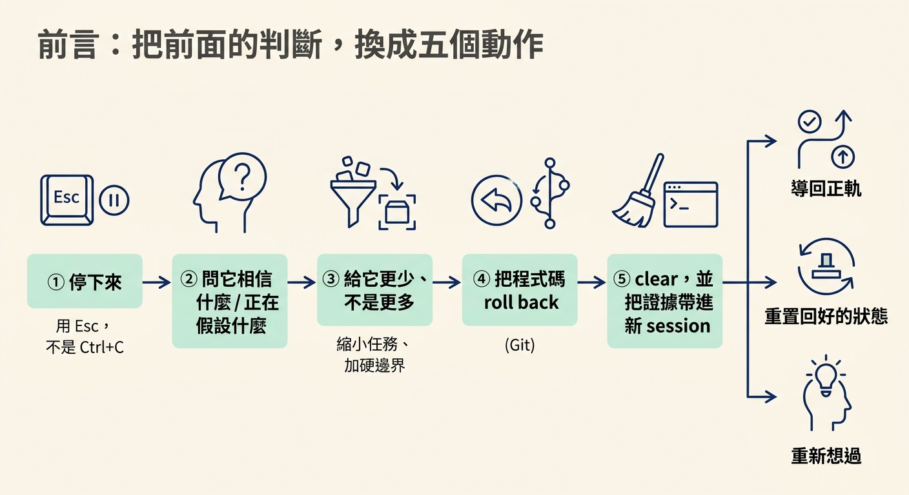
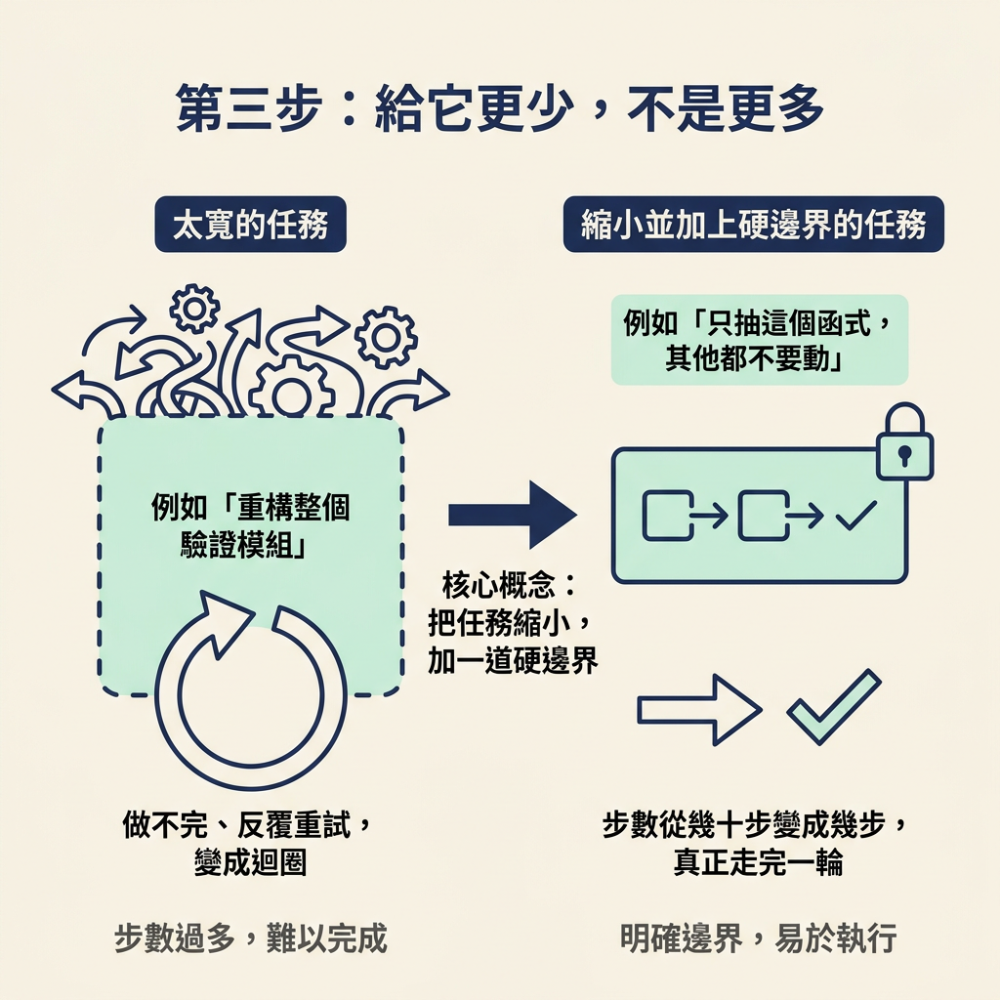
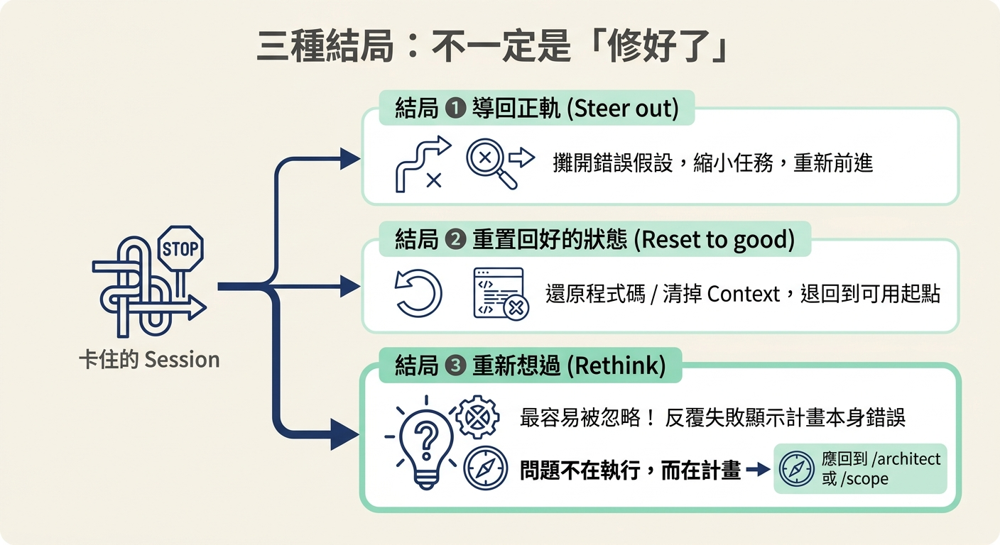

依序套用 stop → 問它相信什麼 → 給更少任務 → rollback → clear 並帶證據，把事情救回來；並在事前用「先計畫、再編輯」預防迴圈發生。
上一節你做了那個關鍵判斷：這個 session 的 context 是資產還是負債。但判斷本身不會修好任何東西。這一節要把判斷落地，變成一份可以照著執行、而且有先後順序的動作清單。
動手前你要先具備兩件事：第一，你已經認出這是迴圈（重複但沒有進展），而不是普通的 code bug；第二，你已經判斷過這個 context 該留還是該丟。缺了這兩件事，你在這一節的動作會變成瞎猜。
做完之後你會得到一個結果——不是「問題解決了」，而是「這個 session 走向了某一種結局」。它可能被救回來，也可能被正確地放棄。先把五步走完，結尾再回頭看這三種結局。

第一件事不是修，是停。原文強調的重點是：停止回應要用 Esc，而不是 Ctrl+C。這兩者的差別很重要——Esc 只是中止這一次的回應，session 本身還在；Ctrl+C 則是直接結束整個 session，你會失去它。
Esc Ctrl+C
這一步幾乎不花任何成本，所以原文說：永遠不要跳過它。在它還在打轉的時候，任何你後續要下的判斷，都會被它持續的動作干擾。
停下來之後，先不要改任何東西。原文建議你先問它一句：
你覺得問題是什麼？你正在假設什麼、而那個假設可能是錯的？
預期會看到什麼？一個卡住的 agent，通常正繞著某一個錯誤的假設打轉。當你把那個假設逼它說出來，很多時候迴圈就當場斷了，因為它自己看見了那個矛盾。就算它沒有當場斷，你也得到了一個明確的資訊：下一次嘗試該修正的，正是那個假設。
這一步之所以有效，是因為它把隱形的假設變成看得見的句子。迴圈之所以能持續，往往正因為那個假設始終沒被攤開來檢查。
多數迴圈的起點，是任務一開始就太寬。原文的觀察是：它太寬，所以做不完；做不完，所以反覆重試；反覆重試，就變成了迴圈。
| 太寬（做不完） | 可完成（有明確邊界） |
|---|---|
| 「重構整個驗證模組」 | 「把 token refresh 這個函式抽出來，其他都不要動」 |
所以第三步做的，不是把任務講得更仔細，而是把任務縮小，並且在它被允許更動的範圍上加一道硬邊界。從「重構整個模組」變成「只抽這個函式、其他都不要碰」，它要走的步數就從幾十步變成幾步，也才有機會真正走完一輪。

如果前面那些失敗的嘗試已經把檔案改壞了，千萬不要叫一個還在混亂中的 agent 去清理自己的爛攤子。它很可能會在這個過程裡製造更多問題。正確的做法是你自己把程式碼退回去。
這裡有一個必須先知道的限制：checkpoint 不一定能還原那些被 shell 指令改過的檔案。checkpoint 記錄的是編輯動作，但如果中間有一步是用指令碼或指令直接改了檔案，那類變更可能不在還原範圍內。所以真正的通用後備是 Git：
git restore git reset
選哪一個看你要退到哪裡：只是要丟掉工作區的變更，用 git restore；如果連 repository 的狀態本身都得往回移動，才用 git reset。這一步會丟掉程式碼的變更，執行動作前先確認你要放棄的範圍，因為這不是每一步都能輕鬆回頭的。
最後一步是清乾淨、重開。但這裡有個關鍵：不要把原本的 prompt 原封不動再貼一次。那樣做等於把整條迴圈的起點又複製一遍到新 session，你會得到同一個迴圈。
新的 session 要開在三樣東西上：那個確切的錯誤、那個失敗的測試，以及舊 session 從頭到尾一直漏掉的那一個事實。
一個乾淨的 session，如果一開始就握有強證據，可以在兩輪之內解掉一個中毒的 session 十輪都解不掉的問題。
而且 clear 其實比你想的便宜：你失去的是對話，不是工作。scope、spec 和 AGENTS.md 都還在磁碟上。所以真正要保留的東西——也就是「證據」——本來就不在對話裡，它在你手上。你要做的，只是把它們帶過去。
這五步是救火。要少用到它們，做法很簡單：在一個大改動之前，先讓 agent 只計畫、不編輯任何檔案。
原文的理由很實際——你可以趁一個壞做法還只是幾行文字的時候就否掉它，而不是等它已經改寫了十個檔案之後才發現不對。計畫階段的否決成本是幾行字，編輯階段的否決成本是十個檔案。跨工具對應的作法大概是這個樣子：
| 動作 | Claude Code | Codex | Cursor |
|---|---|---|---|
| 停止回應 | Esc | Esc | Stop，或 Esc |
| 檢查它的假設 | 直接問它 | 直接問它 | 直接問它 |
| 縮小任務 | 直接要求 | 直接要求 | 直接要求 |
| 還原程式碼 | Esc Esc 或 /rewind | git restore | Restore Checkpoint |
| 還原對話 | Esc Esc 或 /rewind | Esc backtrack | Edit an earlier message |
| 重新開始 | /clear | /clear | New chat |
| 保留有用的脈絡 | /compact、/context | /compact | Summarise |
| 先計畫再編輯 | Plan mode | /plan | Ask mode |
| 通用救援 | git restore 或 git reset | git restore 或 git reset | git restore 或 git reset |
原文特別提醒：這張對照表會隨工具版本快速過時，比課程裡其他任何東西都快。使用前要自己驗證每一列是不是還成立，並記下日期。
走完五步之後，一個卡住的 session 只會走向三種結局之一。判斷自己正在哪一種，才是真正的技術：
| 結局 | 什麼時候是這一種 |
|---|---|
| Steer out（導回正軌） | 你把錯誤的假設攤開來、把任務縮小了，於是它重新往前走 |
| Reset to good（重置回好的狀態） | 你把程式碼還原，或把 context 清掉，讓一切退回可用的起點 |
| Rethink（重新想過） | 反覆失敗其實在告訴你：原本的計畫本身就是錯的，該回到 /architect 或 /scope |
第三種最容易被忽略。當你發現怎麼救都救不動，那通常不是 agent 不夠努力，而是計畫本身的假設站不住腳。這時候再多下幾個 prompt 也救不回來——因為問題不在執行，在計畫。能不能認出「我其實是在第三種結局裡」，決定了你會不會白耗時間。

救回一個卡住的 session，有五個依序的動作：用Esc（不是Ctrl+C）停下來；問它相信什麼、假設什麼；把任務縮小、加上硬邊界；用 Git 把程式碼 roll back（記住 checkpoint 不一定還原 shell 指令改過的檔案）；最後 clear，但只帶走證據——確切的錯誤、失敗的測試，以及舊 session 一直漏掉的那個事實，而不是重貼原始 prompt。事前預防是「先計畫、再編輯」。而每個 session 最終只會走向三種結局：導回正軌、重置回好的狀態，或認清計畫本身錯了、該回去重想。
到這裡，這個節點就完整了。你現在有一條完整的線：先分辨是哪一種壞，對 AI 寫的碼用三個來源還原意圖、用四種模式認出破綻；當壞掉的是 agent 本身，先用「重複但沒有進展」認出迴圈，判斷 context 是資產還是負債，再照五步升級把它救回來。下一步建議把這些步驟真的拿到一個 session 上跑一次。